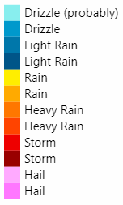

Informationen zum Wetter im Nationalpark
Um Ihre nächste Aktivität im Nationalpark Hohe Tauern besser planen zu können, behalten Sie den Niederschlag im Blick! Beim Klicken auf das Regenwolkensymbol erscheint eine Animation, die den Niederschlag der letzten 2 Stunden anzeigt.
Weitere Wetterinformationen
Wir empfehlen zusätzlich folgende Wetterseiten: